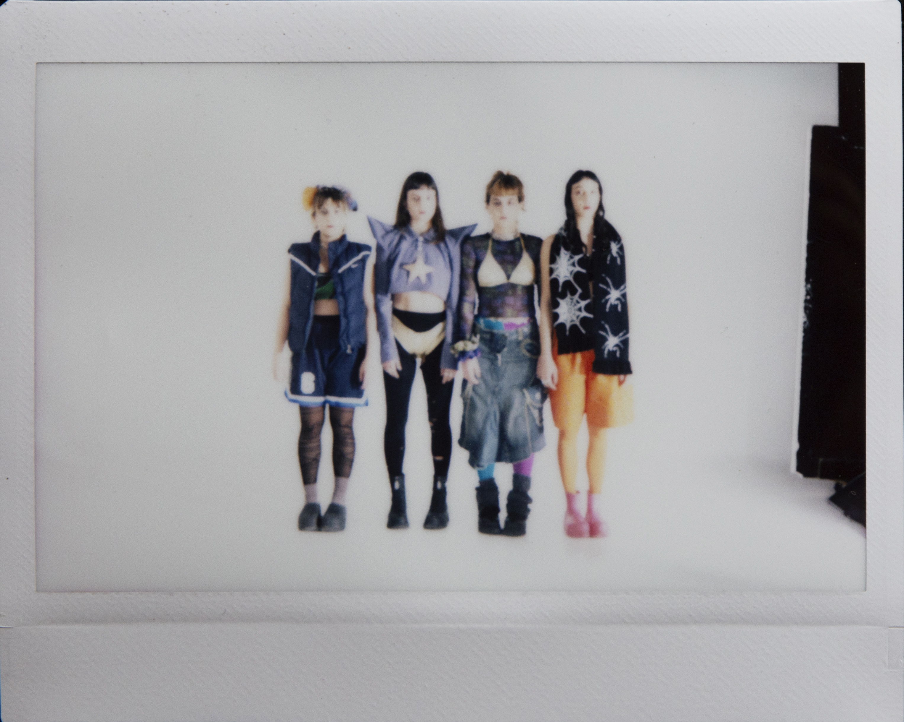

FART

FART is a collective of four dancers (members: Anthie Stasinou, Angie Sarigeorgiou, Annamaria Karounou, and Panagiota Bafouni) founded in March 2024 in Athens. The group functions as a space for meeting and experimentation around dance and art, capturing—through humor and sharp observation—the everyday reality of being an artist in Greece: creation, contradictions, and the challenges of survival.
Through the material it shares on social media, FART redefines the boundaries of dance, connecting it with fashion and contemporary culture.
Credits
Idea / Concept / Co-creation: Anthie Stasinou, Annamaria Karounou, Angie Sarigeorgiou,
Panagiota Bafouni
Video: Konstantinos Sarlas
Video Editing: Anthie Stasinou, Konstantinos Bekos
** Click for instagram page below